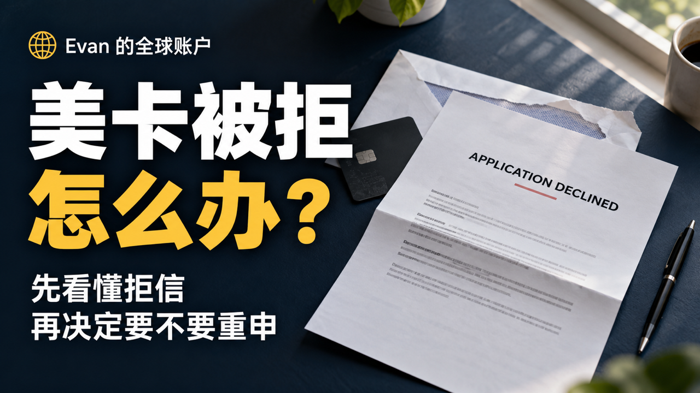

阅读说明：本文是信用卡申请相关的知识整理，不是 Evan 的被拒或复核成功实录。文中的情境和图解用于解释概念，不是具体银行拒信的逐字引文，也不承诺复核、重新申请或预审批的结果。
申请没过，先别急着换一家
Hello，大家好，我是 Evan。
申请美国信用卡，看到别人都批了，自己也去试了一下，结果没过。
这时候很容易想，是不是这家银行不好申请？要不换一家试试？
但我觉得，先别急。你得先知道，这次到底卡在哪里。
是信用记录太短，还是最近申请得太多？是银行觉得你欠的钱比较多，还是资料根本没核实完？这些情况，后面要做的事是不一样的。
今天就聊这个。申请没过以后，怎么知道原因，还有到底什么时候值得再试一次。
没有马上批准，不一定是被拒
提交以后，没有马上出现批准的页面，不一定就是没过。
如果页面写的是 Pending，或者 Under Review，就是还在审核。银行可能还要核对资料，也可能会让你补东西。
这时候先留好申请编号，看看邮件，再从银行官网查一下进度。它让你补什么，就看清楚要求再补。
不要因为没马上出结果，就把同一张卡重新申请一遍。你前面那份可能还没审完，后面又交了一份，也没有解决什么问题。
如果已经明确写了 Declined，或者 Not Approved，那才往下看拒绝原因。
还有，如果你收到一封要你上传证件的邮件，不要看见银行名字就直接传。从官网进去核对一下，别把资料交到假网站上。
先分清申请现在走到哪一步
- Pending / Under Review · 还在审核保留申请编号，从银行官方渠道查进度，按核实后的要求补资料，不重复提交。
- Declined / Not Approved · 已明确不获批查找银行通知里的具体拒绝原因，不只看信用分或平台推荐。
- 下一步 · 按实际原因处理区分等待记录积累、报告余额更新和资料核验，再决定是否联系银行复核或以后重新申请。
拒信里面，先找银行为什么没批
明确被拒以后，留意银行发来的说明。有的能在线查看，有的是邮件或者纸质信。
里面那些很长的说明，不用一开始就从头翻译到尾。先找银行为什么没有批准你。
比如它说，你的信用记录太短。或者，最近申请信用的次数太多。再或者，你现在的余额，相对额度来说比较高。
把这几句找出来，才知道接下来该做什么。
这里有个地方挺容易看混。有些信会另外列一个信用分数，旁边再写几条影响这个分数的因素。
这个是在解释你的分数为什么是这样，不一定就是银行拒绝你的全部原因。
所以别只盯着分数那一块。看一下银行有没有单独写，为什么这次申请没有通过。
如果收到的通知只说可以索取具体原因，没有直接列出来，就按通知里的方式获取。别自己猜了半天，猜的根本不是它拒绝你的原因。
信用记录太短，和信用不好不是一回事
比如，拒绝原因说信用历史不够长。
这不一定是说你以前用卡用得不好。也可能是你刚开始用，银行能看到的记录太少。
你每个月都按时还，当然是好事。但只有几个月的记录，和已经用了好几年的记录，还是不一样。
所以，有一个看着还不错的分数，不代表所有卡都能申请。
如果它主要说的就是记录太短，那今天被拒，明天再交一次，记录还是那么长。
我会先把已经有的卡正常用着，不用为了这张卡，一家接一家地试。
但也别听到这里，就觉得所有人必须等满一年。每家银行、每张卡的要求不一样，要看你申请的是什么，还有它这次给你的原因。
最近申请太多，就先停一下
另一种常见的情况，是最近查询或者新账户比较多。
比如你这段时间看见几张卡都不错，就连续申请了几次。有的批了，有的没批，但申请时产生的硬查询，可能已经留在报告里了。
所以，被拒以后立刻换一家，也不是没有成本的。
这里也顺便说清楚，被拒这个结果，本身不会另外再扣你一笔信用分。可能影响分数的，是申请过程中产生的硬查询。
不是说，拒一次就一定掉多少分。每个人的记录不一样，有的申请流程也不会在同一个阶段做硬查询。
如果银行明确说你近期申请太多，那我会先停下来。再去试几家，只会让最近的申请更多。
等多久，后面再说。但至少不用今天被拒，明天又去申请另外两张。
如果是余额高，先看银行看到的数字
还有一种，是报告里显示你用了比较多的额度。
这个时候，不要只看银行 App 里面今天还欠多少。看看信用报告里，上报的余额是多少。
有可能你已经还了一部分，但报告还没有更新。你知道自己还了，新的申请银行看到的却还是上一次的数据。
如果确实是这个问题，可以先把余额降下来，再确认报告已经更新。
这里没有必要为了申请一张卡，把生活费都拿去还进去。先安排好自己的钱。如果本来还款就已经吃力，更没必要急着多申请一张。
也别把某个使用率当成保证。不是降到某个数字，这张卡就肯定批了。你只是处理了其中一个问题，银行还会看其他条件。
资料没核实好，就先解决资料的问题
如果通知里说的是身份无法核实，或者资料不完整，那就不是单纯等信用分涨的问题。
先对一下申请时填的内容，有没有漏填、填错，或者和你提供的材料对不上。
需要补资料的，就从银行确认的官方入口补。资料按真实情况填写，不要为了让申请过去，这次换一个说法，下次又换一个说法。
用 ITIN 申请的朋友也一样。先看这家银行、这张卡的要求，还有这次通知里到底写了什么。不要一看到没批，就认定一定是 ITIN 的问题。
如果信用报告里出现了不认识的账户，或者明显错误的记录，那要处理的是那条错误，不是不断换银行申请。
还有，有些人之前把信用报告冻结了，申请时忘了处理。银行通知如果提到取不到报告，也要检查这一项。
这些问题，不是多等三个月就会自己解决的。
不同原因，对应不同的检查方向
- 记录太短
- 正常管理已有账户，积累历史，同时核对目标银行和卡片要求。
- 近期申请较多
- 暂停连续尝试，检查近期硬查询、新账户和银行再次申请规则。
- 上报余额偏高
- 在不影响必要生活支出的前提下安排还款，并确认报告实际更新。
- 资料无法核实
- 检查真实资料的一致性，从银行确认的官方渠道更正或补充。
- 报告错误或冻结
- 核对错误记录及报告可访问性，按官方流程处理，而不是只等时间过去。
被拒以后，能不能让银行再看一次？
可以看看这家银行有没有重新审核的渠道，也就是网上经常说的 Reconsideration。
你可以理解成，让银行再看一下这次申请。
比如有资料需要更正，或者它缺的材料你现在补齐了，可以按银行给的方式处理。
但这个不是说，找人重新看一下，就一定能翻过来。
如果它就是觉得你的记录太短，你也没有新的资料能说明情况，那再解释一遍，不会让账户突然多出几年历史。
还有，重新审核原来的申请，和重新提交一份申请，是两回事。别以为自己是在复核，结果又点了一次正式申请。
如果要走这一步，先看清楚它处理的是原申请，还是要重新申请，以及会不会再查信用。不清楚之前，先别交。
重新审核 ≠ 重新提交申请
到底隔多久才能再申请？
这个问题，我不想直接给大家一个三个月，或者六个月。
因为你得看，这段时间以后，到底有什么变了。
如果是资料填错，改好以后，就看银行能不能继续处理原来的申请。
如果是上报的余额太高，就先处理余额，再等报告更新。
如果是记录太短，或者近期申请太多，那确实需要给它一点时间。同时也要看银行对再次申请有没有自己的要求。
所以我会问的是，下次再申请的时候，我和这次有什么不同？
如果只是日历往后翻了几页，其他问题一个都没处理，那还是可能因为同样的原因被拒。
下次申请前，预审批可以看，但别看错页面
有些银行可以先查预审批，看看你可能符合哪些卡。
比如 Capital One 有这样的入口，查询预审批本身不影响信用分。
但预审批不是所有银行都一样，也不等于看到推荐卡片就已经批了。
尤其是一些查分平台写着，这张卡适合你，或者通过机会比较高。那是平台的推荐，不是银行已经决定给你发卡。
你要看清楚自己现在做的是哪一步。是在查资格，还是已经提交正式申请，或者是在接受银行给你的卡。
像 Amex 有些页面，会先给申请结果，再让你决定是否接受，页面也会说明什么时候可能影响信用分。别把它和普通的推荐页面混在一起。
每次点下一步之前，把这一句看清楚，比看到一个通过率就直接申请更有用。
结尾
所以，如果你刚被拒了一次，不用觉得美国信用卡以后就办不了了。
先把这次申请的状态弄清楚，再找到具体原因。能处理的先处理，需要时间的就先用好手里的卡。
下次要申请的时候，再看看那张卡是不是适合你现在的情况。
有一张能正常用、自己也管得过来的卡，先用着就挺好，不用着急把别人手里的卡都办下来。
我是 Evan，我们下期见。
免责声明：本文仅为教育内容和信息整理，不构成个性化金融、税务、法律或投资建议。不同银行、卡片及申请人的条件可能存在差异，复核、预审批、调整余额或等待一段时间均不保证审批结果。请以银行当时的页面、正式通知和账户条款为准，正式申请由申请人本人核对并提交。
资料安全：不要在评论区或普通邮件中发送护照、SSN、ITIN、完整地址、银行账单、信用卡号或验证码。需要补交材料时，请先确认银行官方入口。
官方资料
- Chase：申请状态、补资料与重新审核
- CFPB：被拒后的具体原因、信用分因素与报告信息
- Capital One：常见申请被拒原因
- Experian：申请、硬查询与被拒对信用分的影响
- Capital One：预审批及信用查询说明
- American Express：Apply With Confidence 适用流程
前后篇
下一篇：Revolut 美区开户：账户用途、流程与邀请奖励说明